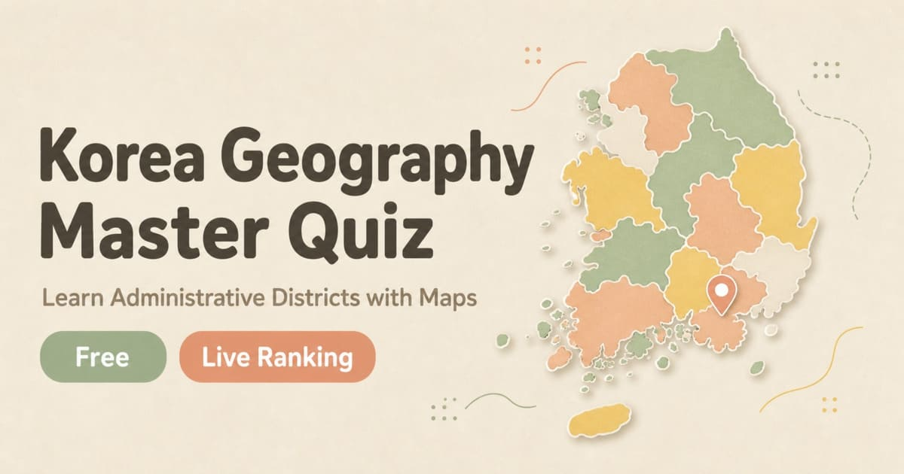

Learn South Korea's administrative divisions by clicking an actual map. Free, browser-based, no installation.

▶ Play the quizSign in with Google or Kakao to start. The interface is currently in Korean, but it is map-based and easy to follow — an English interface is in progress.
South Korea's administrative system has several layers, and place names can be hard to keep straight if you are learning Korean, planning a trip, or just curious about how the country is organized. This quiz turns that into a map game: you either see a highlighted area and name it, or you read a name and click where you think it is.
Because you are looking at real boundary data rather than a word list, you build an actual sense of where things are — which district borders which, how far Gangnam is from Jongno, where a neighborhood you keep hearing about actually sits.
At the top level there is one special city (Seoul), six metropolitan cities (Busan, Daegu, Incheon, Gwangju, Daejeon, Ulsan), one special self-governing city (Sejong), and several provinces. Below those are cities (si), counties (gun) and districts (gu). Below those again are towns (eup), townships (myeon) and neighborhoods (dong).
Seoul alone is divided into 25 districts, each containing dozens of neighborhoods. That is the layer most people find confusing, and it is where this quiz starts.
Korean language learners who keep running into place names, travelers trying to understand where neighborhoods sit relative to each other, geography and map-game enthusiasts, and anyone following Korean news, dramas or music who wants the locations to mean something.